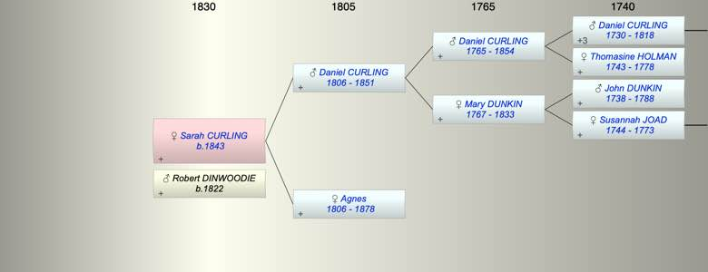

| [Index] |
| Sarah Ann CURLING (1843 - ) |
|  |
| b. 10 Sep 1843 at Ontario, Canada |
| +. Robert DINWOODIE (1822 - ) |
| Parents: |
| Daniel CURLING (1806 - 1851) |
| Agnes (1806 - 1878) |
| Siblings (1): |
| Mary Duncan CURLING (1842 - ) |
| Events in Sarah Ann CURLING (1843 - )'s life | |||||
| Date | Age | Event | Place | Notes | Src |
| 10 Sep 1843 | Sarah Ann CURLING was born | Ontario, Canada | from 1901 Canada Census | ||
| 05 Sep 1851 | 7 | Death of father Daniel CURLING (aged 45) | Trent Hills, Northumberland, Ontario | Note 1 | |
| 21 May 1878 | 34 | Death of mother Agnes (aged 72) | Trent Hills, Northumberland, Ontario | Note 2 | |
| Note 1: buried Christ Church Anglican, aged 55 ex FMP |
| Note 2: buried Christ Church Anglican, aged 73 ex FMP |
| Personal Notes: |
|
Married Robert Dunwoodie in Canada. presumably the two sisters married two brothers.
1881 Canada Census living Ontario no children Sarah Ann os given as English |
| Created on a Mac™ using iFamily for Mac™ on 8 Oct 2023 |